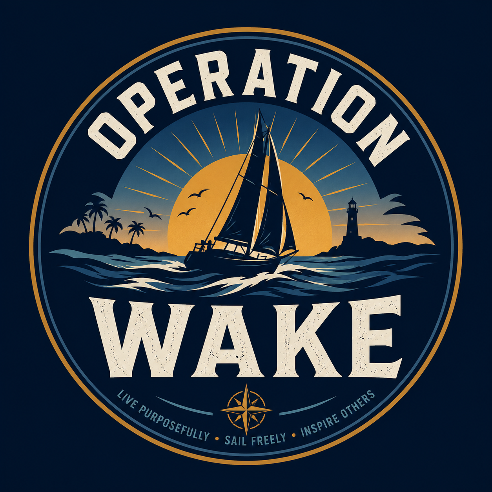

CAMPAIGN ONE
Proving Grounds
Training and crew development through the Texas BBQ Run, Tequila Run, Bermuda Triangle Rum Run, and the family Anchoring Mission.
Explore Proving Grounds
OPERATION WAKETHE OPERATION WAKE JOURNEY
Three connected family adventures. Sailing, learning, and growing together from the first proving voyage to a family circumnavigation.
Operation Wake is our family’s effort to learn from the world together. The Long Way Home is the full three-campaign journey, developing our crew, seamanship, and confidence through progressively larger adventures.
Each passage creates opportunities to learn navigation, work together aboard, explore history and nature ashore, and share what we discover.
CAMPAIGN ONE
Training and crew development through the Texas BBQ Run, Tequila Run, Bermuda Triangle Rum Run, and the family Anchoring Mission.
Explore Proving GroundsCAMPAIGN TWO
Four family missions build toward South America, Patagonia, Mexico, and the Panama Canal, with time ashore to explore and learn.
Explore The Patagonia ProblemCAMPAIGN THREE
A Family Circumnavigation
The third campaign begins at departure, after final refit, outfitting, and provisioning. The family puts its accumulated experience to work around the world.
Explore Beyond the Western HorizonCampaign One develops the boat and crew through four missions. The Texas BBQ Run targets a 2030 launch, followed by Mexico, Bermuda and the USVI, and the family Anchoring Mission.
Explore the planning maps for the first three missions from Clearwater, Florida. Each includes working landfalls, approximate distances, and estimated time underway.
Big Trouble, our Catalina 36, is our training boat. She can serve on earlier missions when properly outfitted for the passage and crew. We’re researching larger family cruisers, with the larger boat required from the Anchoring Mission onward.
We’re cutting expenses and taking on extra work to bring departure forward if we’re ready sooner. The Texas BBQ Run targets 2030. Funding targets will be revisited after we acquire the family cruiser and assess its needs.
OUR CURRENT FUNDING GOAL
Big Trouble made it from Long Island to Norfolk. The next step is to repair her fuel system, complete the checks needed for the next passage, and bring our Catalina 36 to her planned home marina in Jacksonville, Florida.
This gives us a specific task to work toward now: repairs and preparation in Norfolk, followed by the remaining trip home. Expected needs include repair parts, travel back to the boat, marina costs, fuel, and passage provisions. We’ll share the work and actual costs as they become clear.
Current goal: $4,000 to bring Big Trouble home. Help with fuel-system repairs, travel back to Norfolk, and the passage to Jacksonville. This is a working estimate; we’ll share actual costs and update the goal as repairs and preparations progress.
| Expense | Planning allowance |
|---|---|
| Fuel-system repairs, parts, and testing | $800 |
| Travel back to Norfolk and ground transportation | $500 |
| Passage fuel | $500 |
| Provisions and consumables | $300 |
| Marina stays and weather delays | $900 |
| Contingency for unexpected costs | $1,000 |
| Total working goal | $4,000 |
These are planning allowances, not quotes. Repair scope, crew travel, passage duration, and marina costs will be confirmed as preparation develops. Paid mechanical labor or an extended marina stay could change the estimate.
The verified amount below is the campaign-wide balance, including earlier contributions; it is not a separate total raised specifically for this goal. It represents funds available after processing fees, adjustments, and the provisional reserve. The $4,000 working goal describes estimated trip costs.
As each stage is completed, we’ll report what was done and update this section with the next practical goal. The bigger family journey stays in view while we take the next step in front of us.
Checking verified contributions.
Only contributions reconciled against the payment ledger are displayed. Pending settlement and the provisional reserve are labeled separately when verified data is available.
HELP WITH THE NEXT STEP · BIG TROUBLE’S TRIP HOME
Our current focus is bringing Big Trouble from Norfolk to Jacksonville after repairs and passage preparation. Contribute an amount that feels comfortable, or share the project with someone who would enjoy following along. One-time support starts at $1.